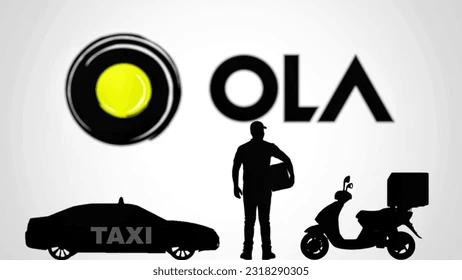
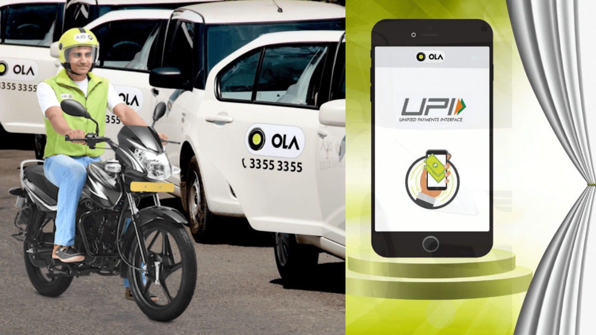
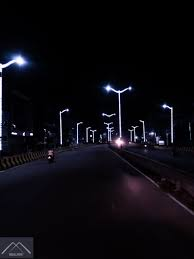
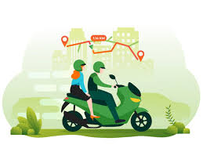
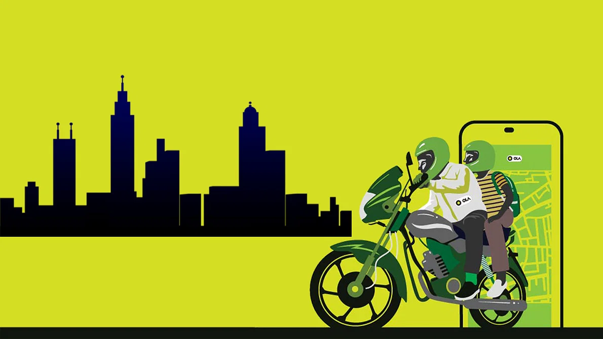

Welcome to Ola Bike Ride Prediction
Choose an option:
Predict Weekly Ola Bike Rides
The "Predict Weekly Ola Bike Rides" feature is designed to forecast the number of rides expected in
the upcoming week using historical data and trends. This predictive tool helps Ola optimize its operations
by ensuring that bikes and drivers are appropriately allocated across various locations. By analyzing factors
such as past ride data, weather conditions, and seasonal patterns, the feature provides accurate demand estimates.
This functionality is particularly beneficial for planning and resource management. It allows Ola to prepare for
high-demand periods, reduce wait times for customers, and manage surge pricing effectively. Additionally, it
contributes to efficient resource allocation, minimizing idle time for drivers and ensuring a seamless customer
experience. Overall, the feature supports operational efficiency while enhancing customer satisfaction.
Predict Ola Ride Price
The "Predict Ola Ride Price" feature enables users to estimate the cost of their rides before booking. Using
a combination of factors such as the trip's distance, duration, traffic conditions, time of day, and location
-specific demand, this tool provides an accurate fare prediction. It leverages advanced algorithms and real-time
data to ensure transparency and reliability in pricing.
This feature helps users make informed decisions, plan their budgets, and avoid surprises regarding ride costs. It
is especially useful during peak hours or in areas where dynamic pricing may apply. Additionally, it promotes trust
by providing clarity on how fares are calculated, enhancing the overall user experience. By empowering riders with
price insights, Ola continues to focus on convenience and customer satisfaction.






Join Our Team
At Ola Bike, we are always looking for talented individuals to join our growing team.
If you are passionate about innovation, customer satisfaction, and making a difference,
we would love to hear from you.
At Ola Bike, we are redefining urban mobility with innovation and sustainability at our
core. Joining our team means contributing to a mission that impacts millions while working
in a culture that values creativity, collaboration, and inclusivity. We offer diverse career
opportunities, from technology and operations to marketing and customer experience, ensuring
room for growth and professional development. At Ola Bike, you’ll work alongside passionate
individuals, gain access to learning opportunities, and make a meaningful impact on the future
of transportation. Together, let’s build smarter, greener cities.
Data Analyst
Analyze ride data and forecast trends to improve bike ride availability and pricing strategies.Use forecasts to adjust pricing strategies, ensuring efficient service and customer satisfaction.
Marketing Specialist
Help us reach new markets and spread the word about Ola Bike. Join our dynamic marketing team and craft impactful campaigns.
Operations Manager
Ensure smooth operations across our bike fleet and help optimize customer satisfaction. Play a vital role in scaling our services.